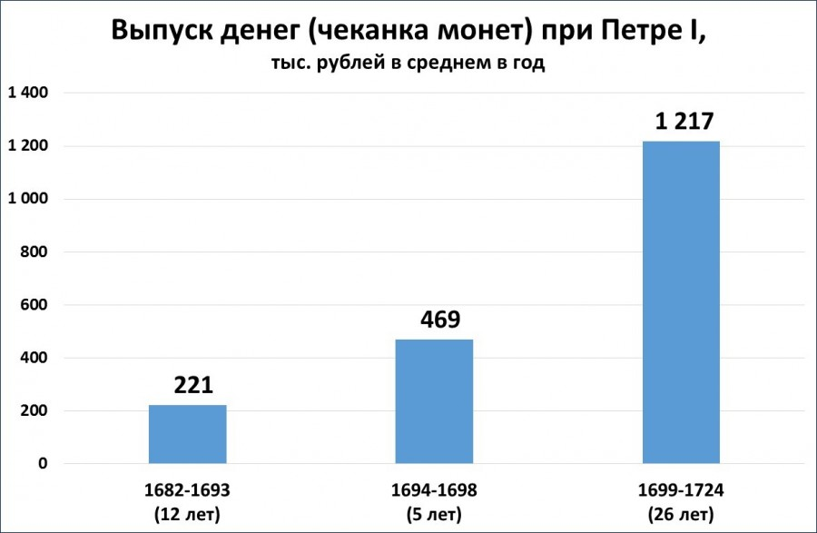

Реформы Петра 1 оказали огромное влияние на развитие страны во многих сферах жизни - от экономики и торговли до культуры и образования. На этой странице мы рассмотрим некоторые из самых значительных реформ, введенных царём, и оценим их значение для современной России.
Денежная реформа. Одним из способов изыскать деньги на войну и реформы стало введение в 1703—1706 гг. новых монет: рубль, полтина, полуполтина, гривенник, пятак и алтын (серебряные), копейка и полушка (медные). Уменьшение веса серебра в монетах и распространение копеек позволило увеличить доход казны. Со временем, однако, положительный эффект нововведения сошёл на нет, так как новые деньги обесценились, а значительная часть государевых средств разворовывалась.
Налоговая реформа.Период правления Петра отличался постоянным введением и увеличением новых налогов — на гербовую бумагу, на бороду, на дубовые гробы, рекрутский и корабельный налог, рыбные, медовые, банные и прочие сборы. Завершились налоговые преобразования заменой подворной подати на подушную: прежде налоги взимались с одного двора, а отныне — с каждого взрослого мужчины податного сословия. Крестьяне платили 74 коп. в год (если они были помещичьи) и 1 руб. 14 коп. в год, если они государственные. Ровно столько же платили мещане. Это позволило увеличить доходы казны почти в два раза. Для введение подушной подати потребовалось провести поголовную перепись (1718−1724 гг.) населения.
Основная суть предпринимаемых Петром I преобразований военной сферы заключалась в пяти направлениях:
| 1701 | Учреждение «консилии» министров |
| 1708 | Деление территории государства на губернии |
| 1711 | Учреждение Правительствующего Сената (законодательный и контрольно-финансовый орган) |
| 1717−1721 | Учреждение коллегий (правительства) |
| 1721 | Провозглашение России империей |
| 1722 | Введение «Табели о рангах» |
| 1722 | Указ о престолонаследии |
Новая система управления государством была выстроена к 1722 г., когда Пётр ввёл коллежские и Генеральный регламенты и установил соподчинённость элементов этой системы: император — Сенат — коллегия — губерния — провинция — уезд. Эта государственная модель в целом сохранялась до 1905 года.Пётр увенчал государственные преобразования провозглашением России империей в 1721 г. (и себя — императором) и Указом о престолонаследии 1722 г. — отныне император вправе был завещать права на престол.
Большая часть образовательных учреждений создавалась ввиду необходимости подготовки для армии и флота новых типов войск или собственного офицерского состава. Одновременно с организацией различных специализированных школ (инженерной, горной, артеллиристской, медицинской и т.д.) детей дворян отправляли заграницу, а из Европы приглашались ученые и инженеры, которых обязывали обучать наиболее способных людей на производстве. Обязательное получение начального образования встретило сопротивление — в 1714 году, одновременно с созданием цифирных школ, Пётр I был вынужден издать указ, запрещающий жениться молодым дворянам не получившим образования.
Медицина нуждалась в поддержке государства, а государство нуждалось в полевых хирургах — поэтому основание в 1706 году Московского госпиталя решало сразу две проблемы. Для обеспечения государственных и частных аптек (которым была предоставлена монополия на аптечную деятельность) необходимыми лекарственными травами в 1714 был основан огород на Аптекарском острове.В 1724 году Петр I подписал указ об учреждении Академии Наук и художеств, чем заложил основу всей будущей российской науке. Для работы в новом учреждении были приглашены иностранные специалисты и вплоть до 1746 года большая часть академиков была иностранцами.
Ключевые нововведения в культурную жизнь: